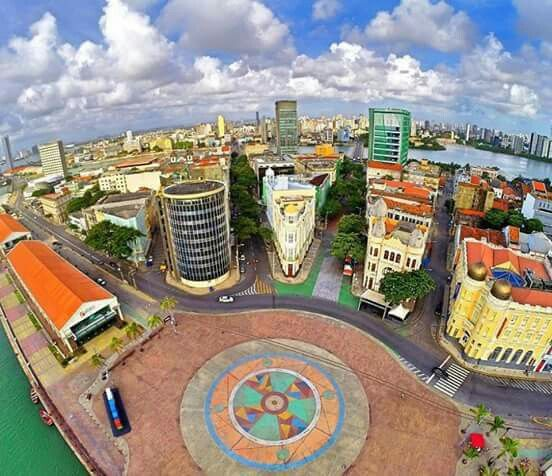

Praça do Marco Zero em Recife/PE

A Praça Rio Branco mais conhecida como Praça do Marco Zero em Recife,
foi o ponto de origem da capital Pernambucana, foi instalado dia 31 de Janeiro de 1938,
feito pelo artista plástico pernambucano Cícero Dias,
no chão é possível ver a Rosa dos Ventos e sua frase Eu vi o mundo… Ele começava no Recife
https://www.ebiografia.com/cicero_dias/

A praça tem o nome original de Praça Barão do Rio Branco, todavia ficou conhecida como Praça do Marco Zero pelo fato de que nela encontra-se o quilometro zero das estradas de Pernambuco. É formada por um marco de cor vermelha doado pelo Clube do Automóvel.

A Praça Rio Branco, também conhecida como Marco Zero,
é um espaço público localizado no bairro do Recife da cidade homônima, capital de Pernambuco.
O local fica próximo ao Porto do Recife e abriga o Marco Zero da cidade do Recife.
É deste marco que são feitas todas as medidas oficiais de distâncias rodoviárias locais.